《轻音少女第一季》改编自Kakifly创作的同名四格漫画, 于2009年4月2日开播。 作品由山田尚子执导, 京都动画负责动画制作, 描绘了在轻音乐部进行乐队活动的女高中生们悠闲的日常。
《轻音少女第二季》剧情紧接第一季动画剧情展开, 讲述的是平泽唯等四人从升入高三到毕业这一年间和高二部员中野梓的日常温馨生活。
《轻音少女剧场版》是同名动画系列的剧场版作品。以轻音部5人前往伦敦的毕业旅行为主题。
评论
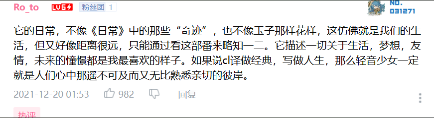
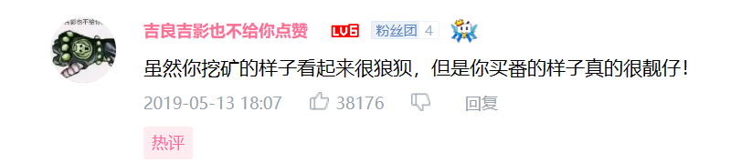
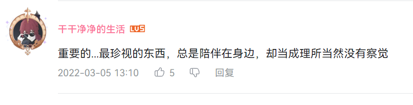
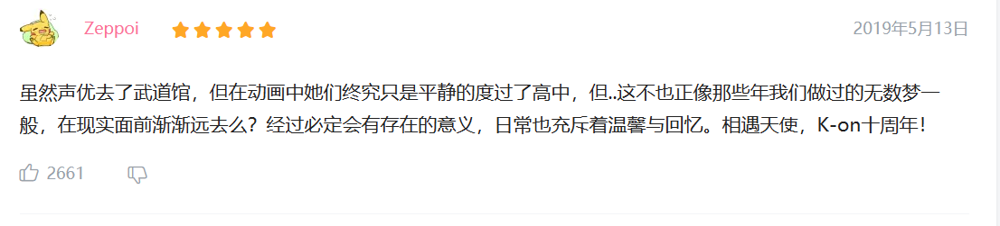
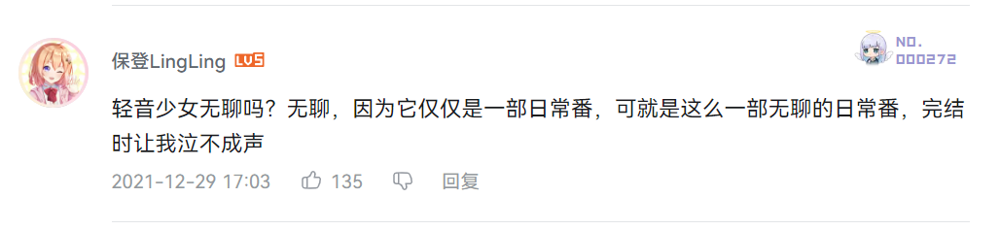
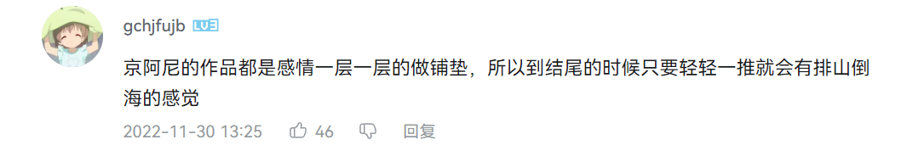
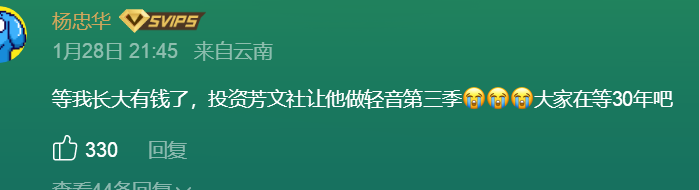
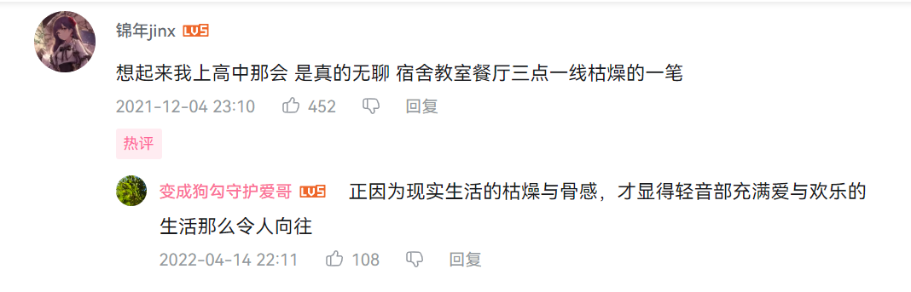
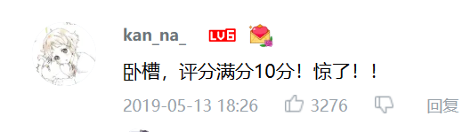
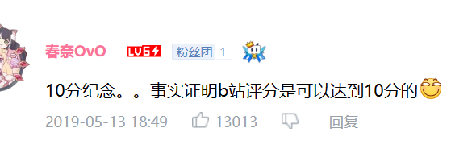
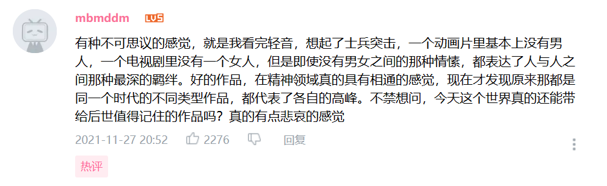
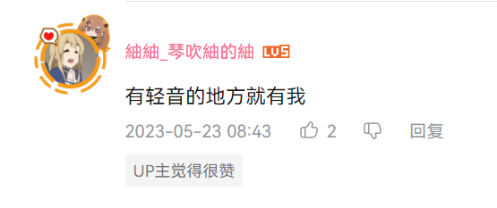
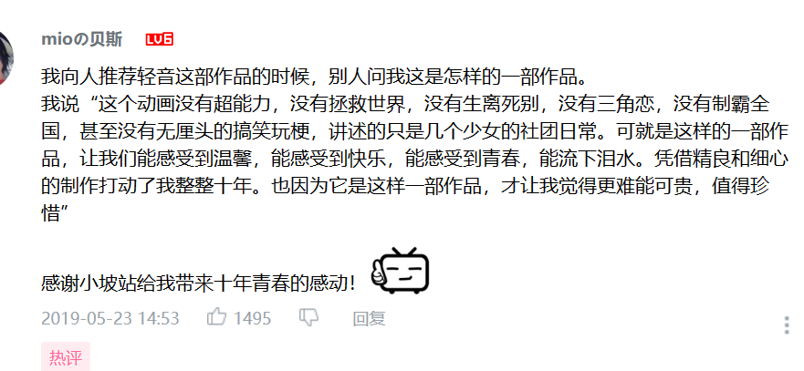
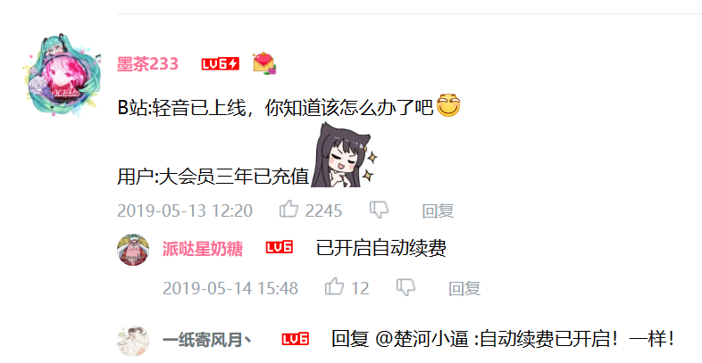
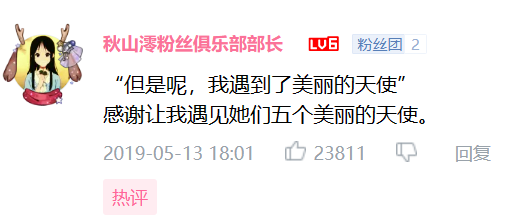
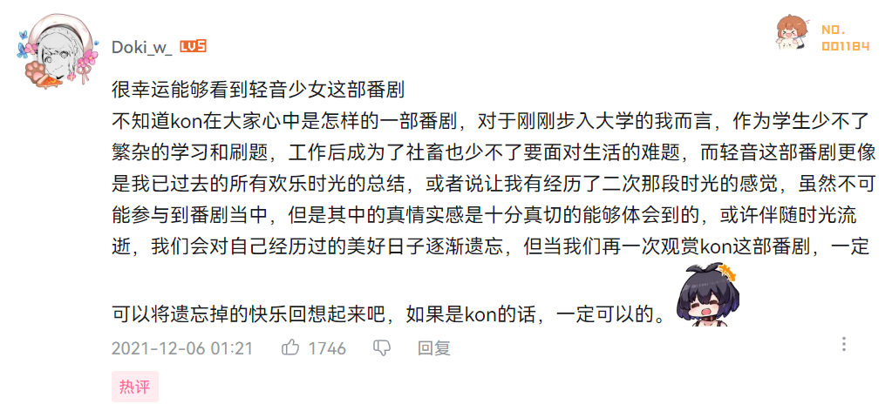


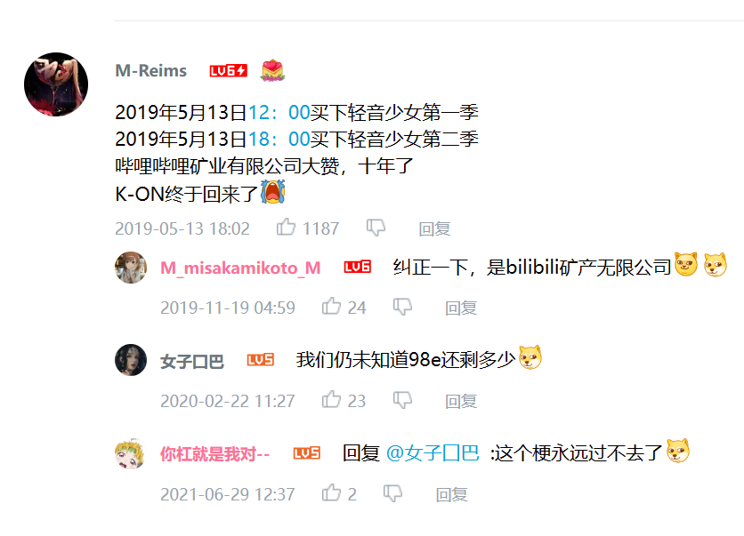
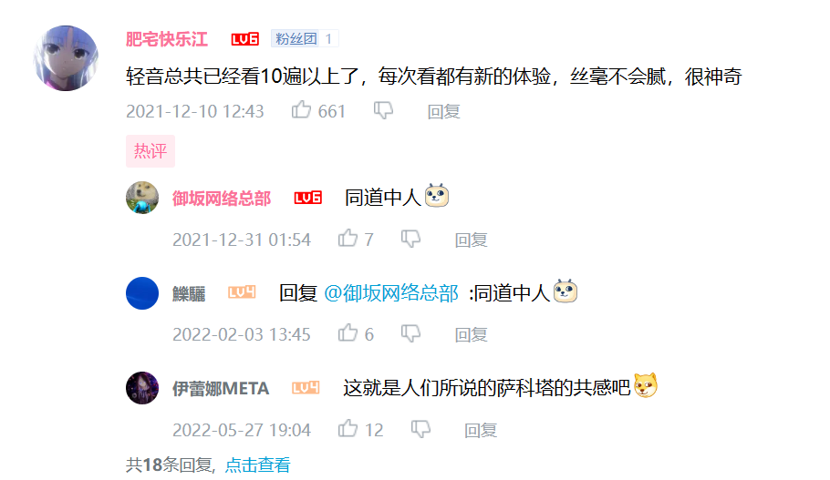
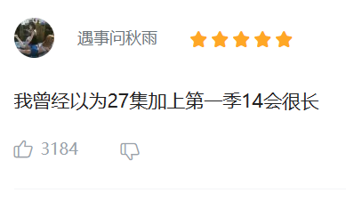
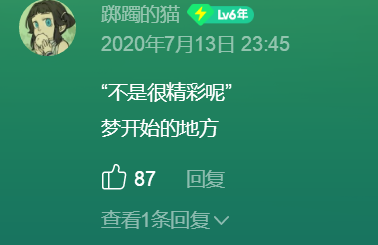
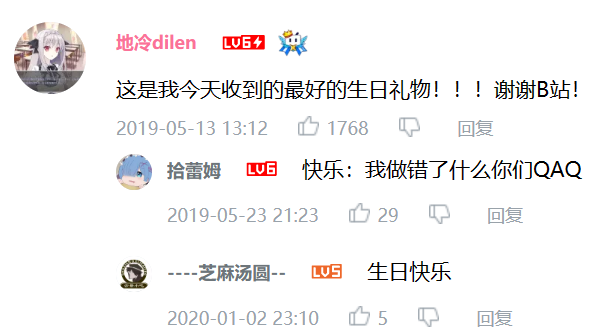

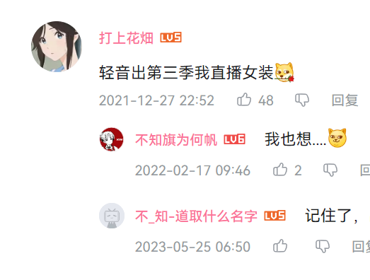
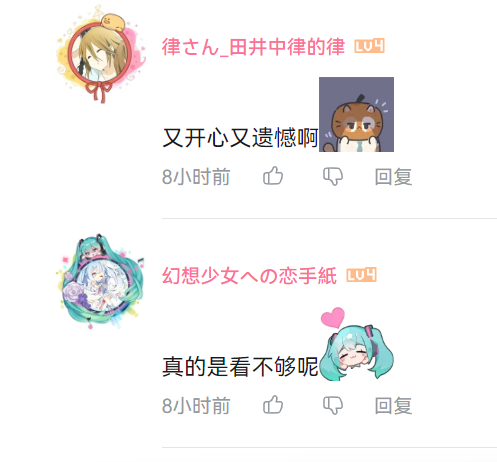
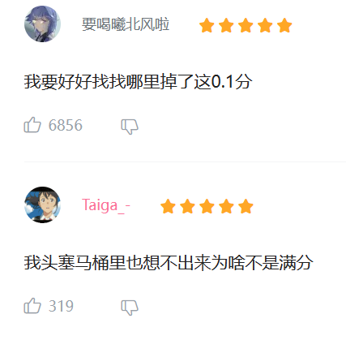
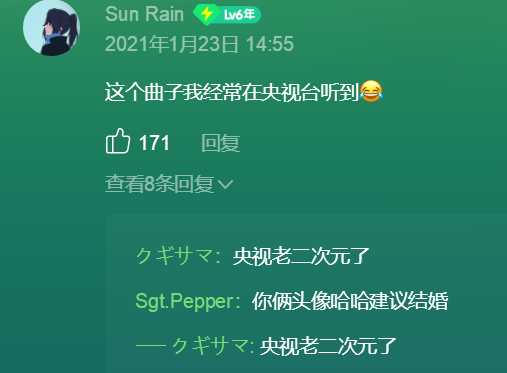
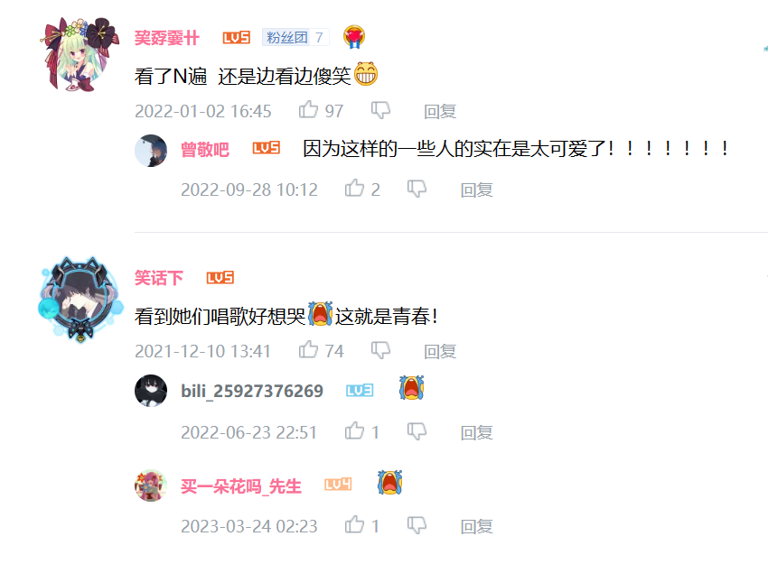
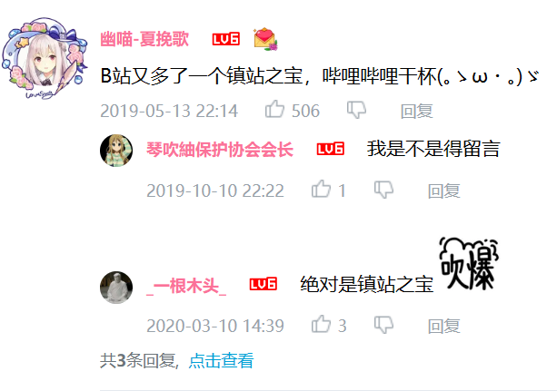
前端 / 设计 / 测试 / 剪辑
BiliBili: sofirj不断燃烧，直至燃烧殆尽，化为白色的灰。———《明日之丈》